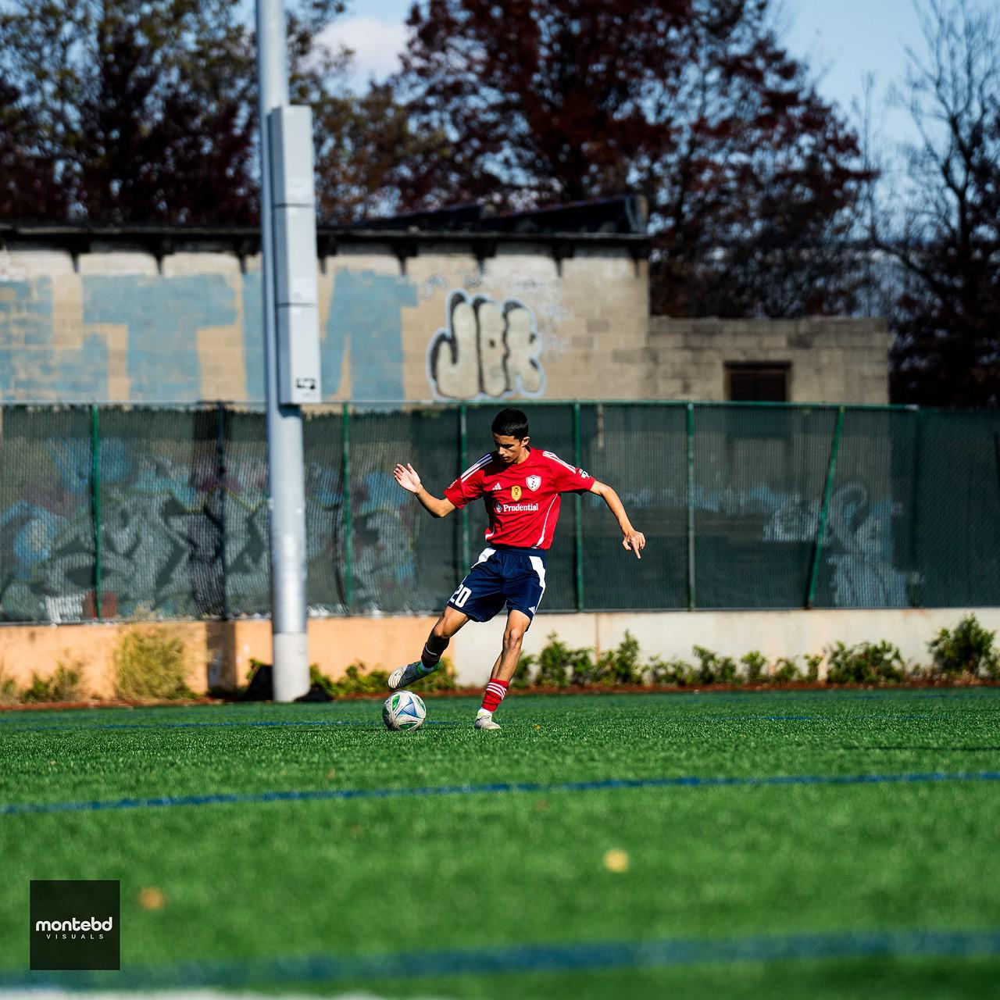
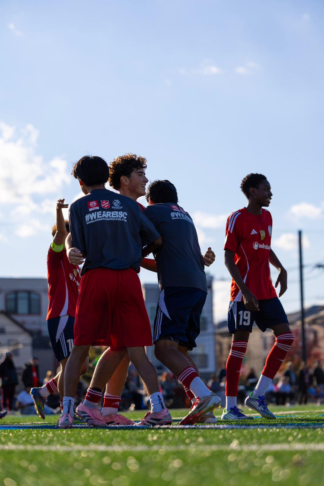
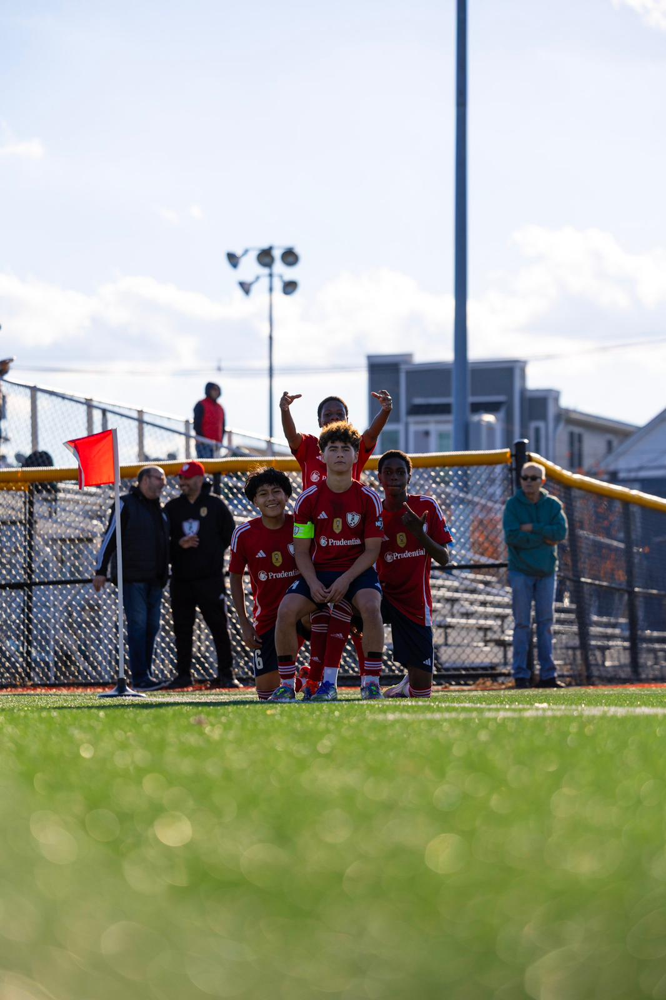

Build an organized, honest, player-centered pathway.
The goal is to help players understand their options, take ownership of recruitment, and connect with college programs that fit their level, goals, academics, finances, and long-term future.
Talent does not automatically create opportunity. Many academy players need guidance, exposure, resources, communication support, and a stronger network. This system is designed to bridge that gap.
The goal is to help players understand their options, take ownership of recruitment, and connect with college programs that fit their level, goals, academics, finances, and long-term future.
Some players have the ability to compete at the next level but lack exposure, recruiting knowledge, financial resources, or the network needed to be seen. The pathway creates structure around those obstacles.
This model organizes recruitment into phases that move from information gathering to post-grad influence.
Collect player information, academic history, graduation year, height, weight, positions, GPA, college interests, and recruitment platform profiles.
Create player profile materials, QR roster banners, website displays, template emails, coach-facing brochures, and consistent communication systems.
Develop trust with college programs, understand what coaches value, and position the academy as a local recruitment point.
Identify player goals, match players with realistic programs, contact schools before events, share profiles, and track follow-ups.
Run workshops on highlight videos, college lists, emailing coaches, ID camps, divisions, professional communication, and ownership.
Clarify family expectations, scholarship realities, financial fit, communication roles, and how parents can support without taking over.
Celebrate commitments, promote players, build alumni connection, and create routes back through UPSL, USL2, mentorship, training, and coaching.
The pathway changes by age so players are not rushed too early or left unprepared too late.
Introduce college pathway, academic standards, habits, GPA importance, and basic player profile awareness.
Build or update recruitment profiles, collect clips, identify broad school interests, and learn communication basics.
Email coaches, attend showcases, visit campuses, build target lists, update video, and track responses.
Narrow options, manage interest, apply to schools, communicate decisions, and confirm the best next step.


